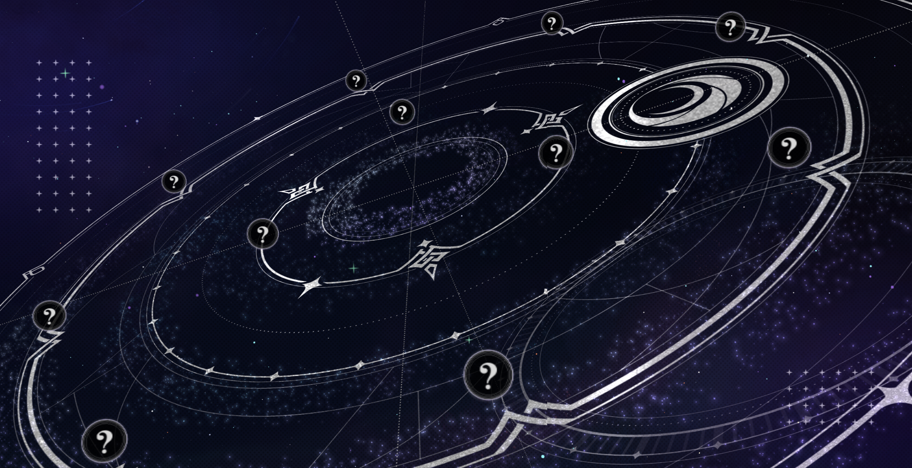
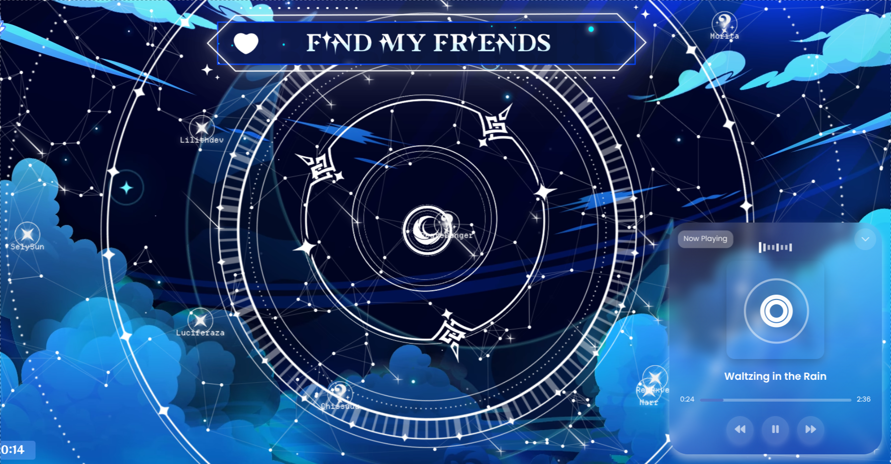
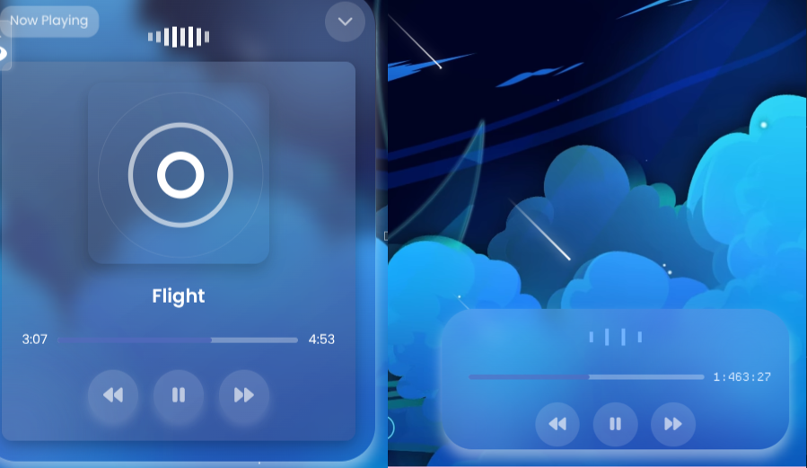
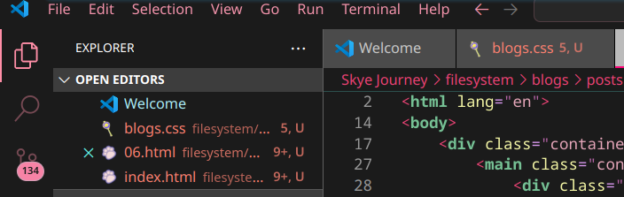
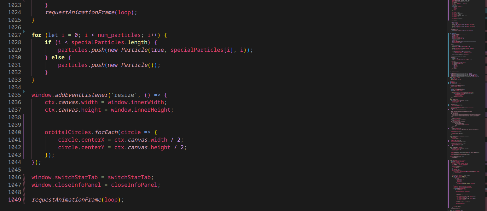

Reflecting on creativity, inspiration, and the process of the update 2.1.
Soo.. How are yooouuu? I hope all is well. Behold the... uhhh.. Upcoming happy place for such cool things to me. It gets a little chaotic here and there but does it really matter? It's out of reach for anyone else to linger around anyways. So, here we are—Skye Journey 2.1, huh? Honestly, this took me way too long. I'm a pretty slow person when it comes to, well, everything. I also deal with constant burnout, sometimes to the point where I don't touch a project for weeks. But I finally got myself together and decided to start updating, improving—just making things better.
Lately, I've been practicing web development by making sites for friends, trying to sharpen my programming skills. I still think they're, uh... kind of a disaster, but hey, progress is progress. Anyways, this site's progression is whenever i feel like it. Slowly but surely things will appear on this website and ill probably never mention when it's finished lol. I want to make this site as beautiful and interactive as possible, experiencing my diverse interests and bringing them to the table like my own world!
Update 2.1
So! The 2.1 update, let's talk a little about that while I tell you what's been happening these past few months. For this update, I decided to improve the site's intro logo, as well as improve most of the entry and exit animations to make them more fluid, you know? I wanted everything to be more interactive and pleasing to the eye in terms of design and animation. Among that, if you remember, my previous friends section was pretty empty and only had what seemed to simulate a network of constellations with dots connecting my friends. And well! Now this is much better; it has beautiful animation, although initially I wanted to do something similar to Mihoyo's "Song of the Welkin Moon" page.


I even took the time to take some assets from the page and imitate its design. However, I was afraid that the design might not be perfect, so I decided to create my own 2D version. If you're wondering where I get these resources from, well, I'll tell you my secret! The amazing official Genshin Impact art and assets fanblog, Genshin Impact Resources has been a huge help with this. I should clarify this, which is obvious, but Skye Journey is just a personal non-profit website, so if you want to credit someone, please credit Mihoyo because these resources belong to them! I'm just a programmer with a lot of free time lol.
Among other small updates, we finally have the blog site! I think it's important because the blog section in version 1.0 was pretty horrible until I decided to transform everything. And here we are, still updating. Also, uh, we have a new, prettier and more efficient music player! I'm slowly getting around to making this website responsive, so little by little that will happen (and I might have to use more libraries in the process).

In this image, you can see the new music player compared to the old one... A big change, right? It's so much better. Anyway, I also moved things from their folders when moving the website to Github, so some things were broken and now they're not! Also, we have a new guestbook since the old one stopped working due to its discontinuation. Feel free to leave a message in the guestbook whenever you want! If I remember correctly, I think I also made sure it was responsive.
And Jesus Christ, this update was definitely wild and heavy. I mean, almost 140 changes! And I'm missing a ton more, since as of this writing, the update hasn't even been released yet, so by the time you read this, you'll probably realize how much I added. I'm a creativity and energy bomb that burns out quickly, so I need to work with this as best I can. There are also now comment sections for blog posts!! I don't really know how they work since they're untested, but feel free to leave one message... so we'll see how that goes? yeah!

Javascript!!

I usually don't let people see my code because I'm embarrassed and think it's a mess, but look at that! Almost 1,050 lines of code. It's a lot, and I'm tired, but it feels worth it. I just wanted to share. The code for my friends list is brutally huge. Maybe I'll fix that in the future! For now I must return to work and continue with my other personal tasks and projects. I hope to talk to ya'll soon again!

 Home
Home About
About Social
Social Support
Support Tos
Tos Tools
Tools Blog
Blog  Resources
Resources Software
Software Credits
Credits Workstation
Workstation Sitemap
Sitemap